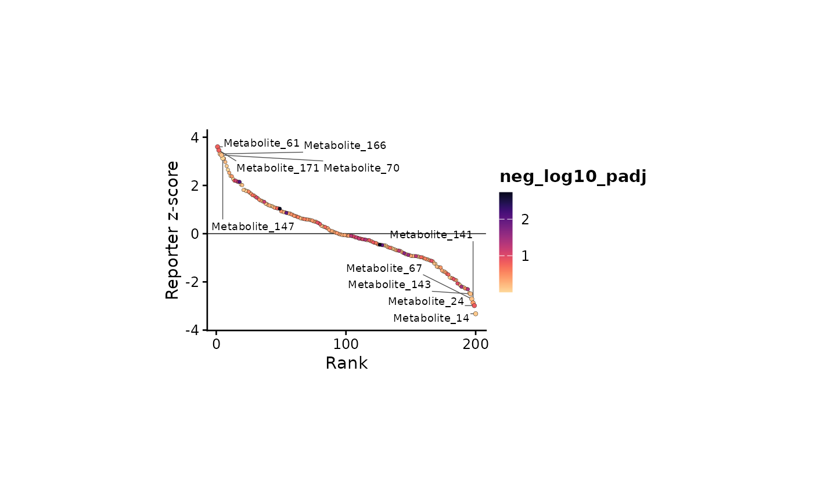
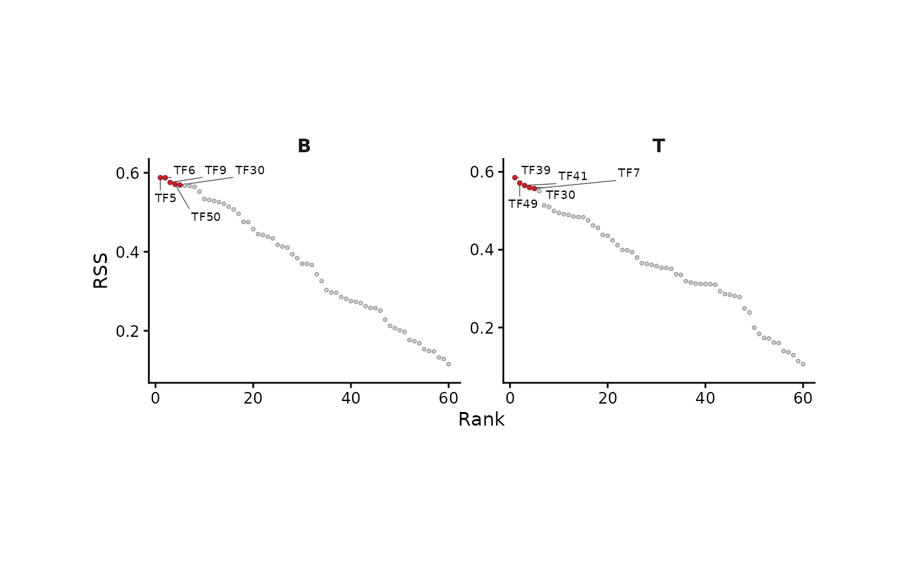

Draws features (genes, regulons, metabolites, gene sets...)
along their rank on x, with a value on y: usually the metric
they are ranked by, such as the regulon specificity score
(RSS) of SCENIC, reporter metabolite z-scores, log2 fold
changes or NES. The features at the ends of the ranking, or
chosen ones, are named. Panels have a fixed size; save the
plot with save_plot.
Usage
plot_rank(
data,
rank.by,
value = rank.by,
feature.col = NULL,
decreasing = TRUE,
split.by = NULL,
ncol = NULL,
color.by = NULL,
cols = NULL,
color.limits = NULL,
label = c("top", "selected", "none"),
label.n = 5,
label.side = c("auto", "first", "last", "both"),
label.features = NULL,
label.size = NULL,
label.wrap = 25,
italic.genes = FALSE,
pt.size = 1,
alpha = 1,
raster = NULL,
raster.dpi = 1000,
title = NULL,
x.title = "Rank",
y.title = NULL,
legend.title = NULL,
panel.width = 2.5,
panel.height = 1.8,
legend.position = "right",
bg = "transparent"
)Arguments
- data
A data frame with one row per feature (per feature and `split.by` level)
- rank.by
Numeric column the features are ranked by
- value
Numeric column drawn on y, default is `rank.by`
- feature.col
Column of the feature names. If NULL (default), the row names
- decreasing
Whether rank 1 is the largest value of `rank.by` (default, TRUE) or the smallest (FALSE, e.g. for p-values)
- split.by
Column whose levels are ranked separately, one panel each (e.g. the cell type of regulon specificity scores). Default is NULL (one ranking)
- ncol
Number of panel columns with `split.by`. If NULL (default), up to 4
- color.by
Column the points are coloured by: numeric (a colour bar, e.g. -log10 adjusted p-value) or discrete (groups). If NULL (default), the points are grey and the labelled ones red
- cols
Colours. With a numeric `color.by`: a sequential palette name or colours from low to high; if NULL, reversed magma. With a discrete `color.by`: a palette name, or colours named by level or in level order. Without `color.by`: two colours, the labelled and the other points (or named `labelled`, `other`)
- color.limits
Limits of a numeric colour scale, e.g. `c(0, 18)`, so that several plots share one scale; values beyond them get the end colours. If NULL (default), the range of the data
- label
Which features to name: "top" (default; the `label.n` first and / or last ranks, see `label.side`, plus any `label.features`), "selected" (only `label.features`) or "none"
- label.n
Number of features named at each labelled end of the ranking (in each panel), default is 5
- label.side
Ends of the ranking named with `label = "top"`: "auto" (default; both ends when `rank.by` has values on both sides of 0, such as z-scores or fold changes, the first ranks otherwise), "first", "last" or "both"
- label.features
Features to name, matched exactly
- label.size
Size of the labels in points. If NULL (default), 7 pt, or smaller (down to 5 pt, the same in every panel) when the labels do not fit clear of each other at 7 pt
- label.wrap
Labels longer than this many characters are wrapped after spaces, hyphens, underscores or commas, default is 25; NULL or Inf for no wrapping
- italic.genes
Whether the labels are set in italics, default is FALSE. Set it to TRUE when the features are genes
- pt.size
Size of the points, default is 1; the labelled ones are 1.3 times larger
- alpha
Opacity of the points, default is 1
- raster
Whether to rasterize the points (needs ggrastr). If NULL (default), above 5,000 points
- raster.dpi
Resolution of rasterized points, default is 1000
- title
Plot title, default is NULL
- x.title
Title of the x-axis, default is "Rank"
- y.title
Title of the y-axis. If NULL (default), the name of `value`
- legend.title
Title of the colour legend. If NULL (default), the name of `color.by`
- panel.width
Width of a panel in inches, default is 2.5
- panel.height
Height of a panel in inches, default is 1.8
- legend.position
Position of the legend, default is "right"
- bg
Background colour, default is "transparent"
Value
A ggplot object; its source data
(export_source_data) hold one row per feature:
`feature`, `split` (with `split.by`), `rank`, `rank_tied`,
`rank_value`, `value`, `color` (with `color.by`) and `labelled`
Details
Ties. Each feature gets its own position on x, so that tied features are not drawn on top of each other. Ties of `rank.by` are broken by `value`, then by the feature name (alphabetically), never by the row order of `data`, so the same data in any order give the same plot. The source data hold the position (`rank`) and the tied rank to report (`rank_tied`: competition ranking, e.g. 1, 2, 2, 4). `label.n` counts positions; when the cutoff falls inside a run of ties, a message names the tied features left unlabelled.
Labels. Each label is placed next to its point, at the nearest
position clear of the other labels, of all points and of the leader
lines, preferring the side the curve leaves empty (towards higher ranks
for the first ranks, towards lower ranks for the last ones); a leader
line joins it to its point. The layout is computed for the panel size,
so set the size with `panel.width` / `panel.height` (not by adding
panel_size_theme afterwards). When a panel is too crowded,
the labels are made smaller (with the default `label.size`, down to 5
pt); if they still do not fit, a warning suggests a smaller `label.n` or a
larger panel.
Examples
set.seed(1)
# Reporter-metabolite-like z-scores: a signed metric, both ends named
df <- data.frame(
metabolite = paste0("Metabolite_", 1:200),
z = rnorm(200, sd = 1.5),
padj = runif(200)
)
df$neg_log10_padj <- -log10(df$padj)
plot_rank(
df,
rank.by = "z",
feature.col = "metabolite",
color.by = "neg_log10_padj",
y.title = "Reporter z-score"
)

# Specificity scores per cell type: one panel each, first ranks named
rss <- expand.grid(regulon = paste0("TF", 1:60), cell_type = c("B", "T"))
rss$rss <- runif(nrow(rss), 0.1, 0.6)
plot_rank(rss, "rss", feature.col = "regulon", split.by = "cell_type", y.title = "RSS")
